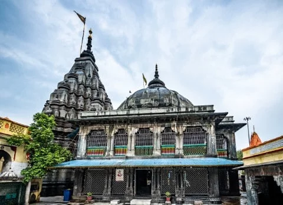

HISTORY OF GAYA

According to modern scholars, the Kikata kingdom from Rigvedic period was located at Gaya, Bihar. Gaya is an ancient city, with a Buddhist documented history dating back to the 6th century BCE when the sage Gautama Buddha attained enlightenment at Bodh Gaya, 16 km (9.9 mi) from the modern city.[10] Even before this time, Gaya was a place of pilgrimage for people from around the world. The fame of ancient Gaya derived from the account in the Ramayana of the god Rama coming here to the banks of Phalgu River (called the Niranjana), accompanied by his wife and younger brother, to offer pind-daan for their father Dasharatha, for the moksha of his soul.[11][12] In the Mahabharata, Gaya is referred to as Gayapuri. Gaya flourished during the Maurya Empire (321–187 BCE), which ruled from the city of Pataliputra (adjacent to modern Patna) over an area that extended beyond the Indian subcontinent. During this period, Gaya witnessed the rise and fall of many dynasties in the Magadha region, where it occupied an important place in cultural history over some 2,400 years between the 6th century BCE and the 18th century CE. The city's cultural significance began with the dynasty founded by Sisunaga, who exercised power over Patna and Gaya around 600 BCE. Bimbisara, fifth king of the dynasty, who lived and ruled around 519 BCE, had projected Gaya to the outer world. Having attained an important place in the history of civilization, the area experienced the influence of Gautama Buddha and Bhagwan Mahavir during the reign of Bimbisara. After a brief period under the Nanda dynasty (345–321 BCE), Gaya and the entire Magadha region came under Mauryan rule. Mauryan Emperor Ashoka (272–232 BCE) embraced and promoted Buddhism. He visited Gaya, and built the first temple at Bodh Gaya to commemorate the Buddha's attainment of supreme enlightenment.[13] The period of Hindu revivalism began with the Gupta Empire during the 4th and 5th centuries CE. Samudragupta of Magadha brought Gaya into the limelight, making it the capital of Bihar district during the Gupta empire. In 750 CE, Gaya became a part of the Pala Empire, under the rule of its founder, Gopala. It is believed that the present temple of Bodh Gaya was built during the reign of Gopala's son, Dharmapala. In the 12th century CE, Gaya was invaded by Muhammad Bakhtiyar Khilji of the Ghaznavid Empire. By 1557, it had become part of the Mughal Empire, and remained under its power until the Battle of Buxar and the beginning of British rule in 1764. Gaya, along with other parts of the country, gained its independence in 1947.